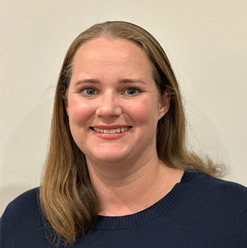
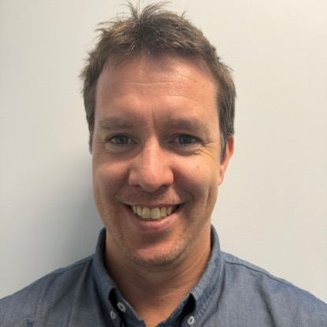

Doctors
Dr Felicity Donaghy
Dr Felicity Donaghy graduated from Sydney University and completed her General Practice Fellowship in 1991. She has worked in General Practice since 1990. Dr Donaghy has worked in Canberra since 2004 and has been the Principal at Garema Place Surgery since 2010. Dr Donaghy enjoys all aspects of General Practice and believes that a good relationship with a caring General Practitioner is the key to maintaining good health.
Dr Donaghy is not currently seeing new patients. Book Appointment →Dr Veronica Kolos
Dr Veronica Kolos holds a degree in Medical Science and a Masters of Public Health with Honours from the University of Sydney. She completed a Bachelor of Medicine and Surgery at the Australian National University. She then undertook further training, including The Diploma of Child Health and The Certificate of Sexual and Reproductive Health. Dr Kolos has undertaken further studies in Dermatology, completing a Graduate Diploma in General Dermatology, Dermoscopy and Skin Cancer Medicine. She has worked at Garema Place Surgery since July 2011 and obtained her General Practice Fellowship in 2012. She enjoys all aspects of General Practice and has specific skills and experience in Paediatrics, Sexual Health and Fertility. Dr Kolos also has a special interest in dermatology and in performing skin examinations, diagnostic excisions and procedures.
Dr Kolos is not currently seeing new patients. Book Appointment →Dr Libby Goodchild
Dr Libby Goodchild grew up in Canberra. She completed an Arts Degree at Macquarie University before returning to Canberra to work in the community sector. She went on to study Medicine at the University of Newcastle and returned to Canberra in 2000 to complete a Diploma in Obstetrics and Gynecology. Dr Goodchild finished her General Practice training in 2004. She became a Lactation Consultant in 2013 and a member of the Academy of Breastfeeding Medicine. She has been working at Garema Place Surgery since July 2015. Dr Goodchild has a special interest in Breastfeeding Medicine including tongue tie assessment and treatment.
Dr Goodchild is not currently seeing new patients. (Tongue tie/Lactation consultation only accepted) Book Appointment →Dr Natasha Greer
Dr Natasha Greer graduated from the University of Western Sydney in 2013. She worked for several years in hospital roles before completing her general practice fellowship in Sydney. She relocated to her hometown of Canberra and commenced working at Garema Place Surgery in 2018. Dr Greer has a Diploma of Child Health and National Certificate in Reproductive and Sexual Health. Her special interests include women's health, sexual health and child health. She inserts intrauterine devices (Mirena, Kyleena and copper IUDs) and the contraceptive implant (Implanon).
Dr Greer is not currently seeing new patients. (IUD consultation only accepted) Book Appointment →Dr Peter Barger
Dr Peter Barger grew up in northern NSW. He completed a postgraduate engineering degree and worked for Defence for 7 years then moved to Adelaide to study medicine. He graduated with a Bachelor of Medicine and Surgery from Flinders University in 2011 and worked in a variety of hospital-based jobs for several years before returning to Canberra with his family to begin general practice training in 2016. He joined Garema Place Surgery in February 2018.
Dr Barger is seeing new patients. Book Appointment →Dr Kate Eisenberg
Dr Kate Eisenberg is a General Practitioner and GP Obstetrician who completed her medical training at the Australian National University in 2013, following an Honours degree in Neuroscience and Anatomy. In addition to her RACGP fellowship, she has a Diploma in Obstetrics and Gynaecology and National Certificate in Reproductive and Sexual Health. She has special interests in reproductive choice, pregnancy shared-care, contraception (including IUD and implanon insertions) and menopausal medicine.
Kate is a strong advocate for women in the sciences, receiving awards including ACT Young Woman of the Year and has been a finalist for Young Australian of the Year (ACT). She enjoys wholistic general practice care, focussing on preventative health. Kate joined Garema Place Surgery in February 2021.
Dr Eisenberg is not currently seeing new patients. (IUD consultation only accepted) Book Appointment →
Dr Katherine Simpson
Dr Katherine Simpson grew up in Sydney, before studying medicine at Newcastle University. She moved to Canberra to undertake her hospital training, and then General Practice training, including training at Garema Place Surgery in 2015. She has been working as a GP in Orange, NSW for the past 6 years. She enjoys all aspects of general practice.
Dr Simpson is seeing new patients. Book Appointment →
Dr Peter Robens
Dr Peter Robens graduated from the Australian National University in 2018 after growing up and completing undergraduate studies in Sydney.
Dr Robens has practiced in Canberra tertiary hospitals for seven years with significant experience in emergency/critical care medicine, general medicine and oncology.
Dr Robens is interested in all areas of general practice with special interests in acute medicine, oncology, cardiology and preventive medicine.
Dr Robens is seeing new patients. Book Appointment →